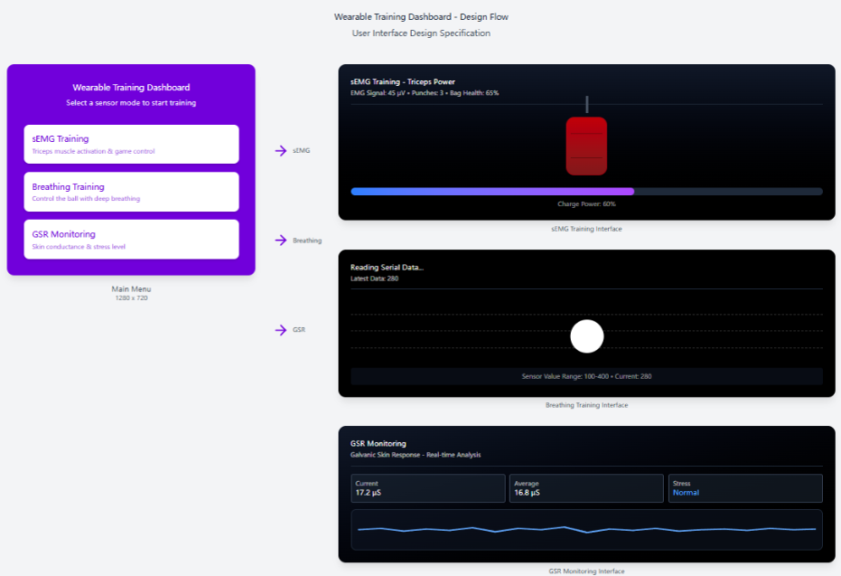
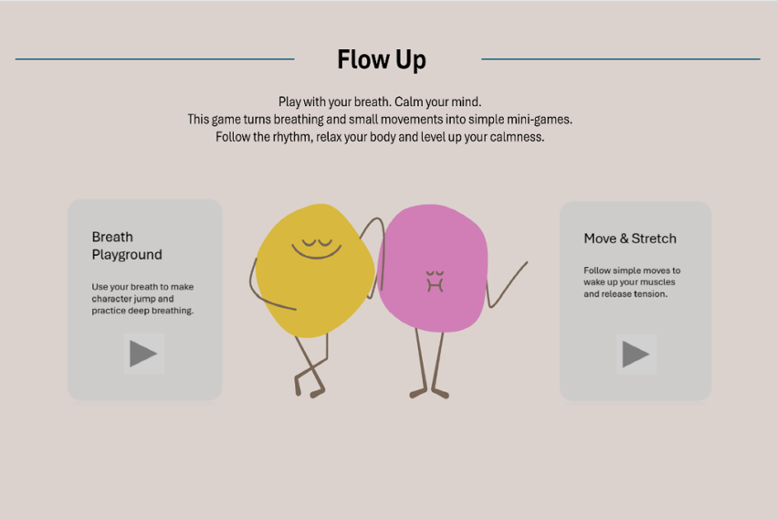
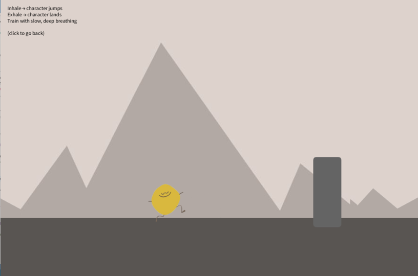
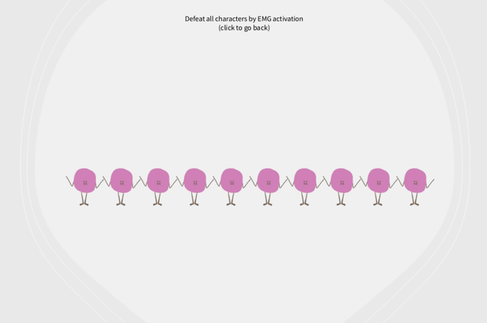

Interactive Game Interface
We used a binary logistic classification algorithm to classify triceps sEMG signals. The primary objective of the model is to distinguish between relaxed and active muscle states, enabling the system to determine whether the user is intentionally activating their triceps to trigger in-game actions and interact with on-screen elements. Specifically, the model classifies real-time sEMG signals into two labels: Relaxed (0) and Active Contraction (1).
We chose a Logistic Regression model for the following reasons:
It can run at 50 Hz on embedded devices.
The feature weights (wmean, wrms, wmav, wwl) clearly indicate which aspects of muscle activity contribute to the classification.
It performs well with short electromyographic signal recordings.
The model can be exported as a .pkl file and reimplemented in Java using only simple mathematical operations.
We extract four commonly used EMG features:
Represents the baseline level of muscle activity.
Reflects the intensity of muscle contraction.
Indicates muscle activation amplitude and overall muscle tone.
Describes the complexity of the signal waveform and its rapid variations.
These four features effectively capture signal intensity, amplitude, and waveform characteristics, providing reliable separation between relaxed and active muscle states. Additionally, we implemented a separate module for the stretchable respiration sensor to support deep-breathing training. This module continuously estimates the user's breathing state and controls the behaviour of a training ball within the game environment.
For sEMG signal acquisition, preprocessing is essential because sEMG is a weak biosignal and may become
saturated without proper signal conditioning. To reduce noise and prevent possible saturation, we applied
a low-pass filter in addition to the hardware-side amplification system. Data were collected using the Processing IDE
via a simple serial communication protocol.
The collected data were saved as CSV files and subsequently processed in IntelliJ IDEA. For model training, datasets
were collected from four participants.
To obtain accurately labeled datasets, the training data were recorded such that the first 0–30 s contained stable
resting-state signals, while the 30–60 s interval contained active muscle contraction signals.
We labeled the first 1500 samples as class 0 (Relaxed) and the remaining samples as class
1 (Active Contraction).
After labeling, the data were segmented into windows, the four EMG features were extracted, and the corresponding labels
were assigned to each window.
These extracted features were then used to train the logistic regression classifier, which was exported as a .pkl
file containing the feature scaler (mean and variance), model coefficients, all model parameters, and the bias term.
This allows the model to be loaded directly or reimplemented in Java for real-time deployment.
To enable the visualization of physiological data and create an engaging training experience, we designed and iterated on several user interface (UI) prototypes. All interface designs support at least two interaction modes: sEMG activation training and breath-based gameplay (the GSR monitoring mode was removed in later iterations). The first version of the UI design and implementation provided a basic interactive dashboard-style layout with three selectable modes. This prototype focused primarily on functional clarity and physiological sensor feedback visualization rather than a polished, user-centered experience.

Based on early user testing, we further developed three dedicated interaction screens to improve the visual style, playfulness, and interaction clarity.
FlowUp Main Menu
This UI introduces a friendly, game-like landing page where users can choose between Breath Playground and Move & Stretch. The design emphasizes calmness and accessibility, using animated character illustrations to represent relaxation and physical activity.

Breath Playground
This UI provides a breathing-controlled motion game in which slow inhalation raises the character and exhalation lowers it. The interactive design helps users maintain focus while encouraging slow, rhythmic breathing patterns that promote relaxation.

Move & Stretch
This UI presents a simple muscle activation mini-game. The user defeats on-screen characters (10 in total) by flexing their arm muscles, as detected by the sEMG classifier. This design transforms muscle activation exercises into an engaging game, increasing user motivation and participation.

Together, these UI designs illustrate our iterative software development process - from the practical dashboard design and development to more sophisticated, market-oriented, game-oriented interfaces. The redesigned interface emphasizes commerciality, clarity, and physiological engagement, enabling and supporting respiratory modulation and EMG-based activation to support daily relaxation and training.